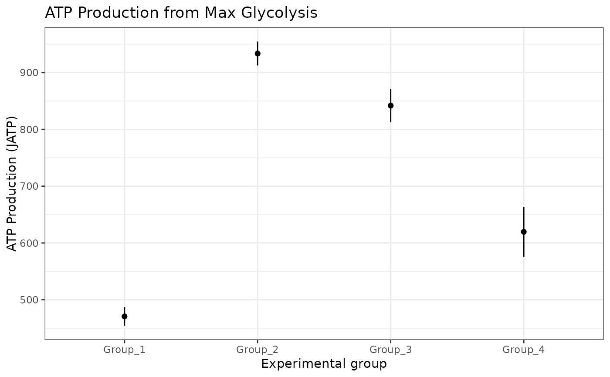
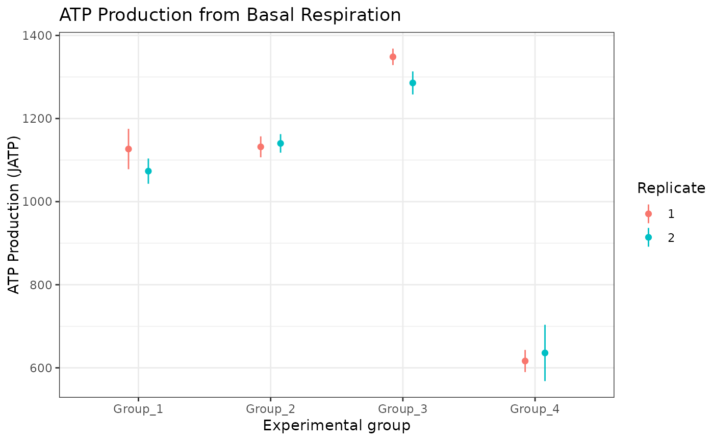
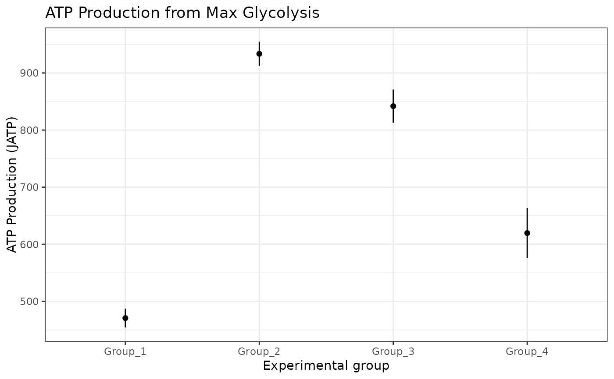
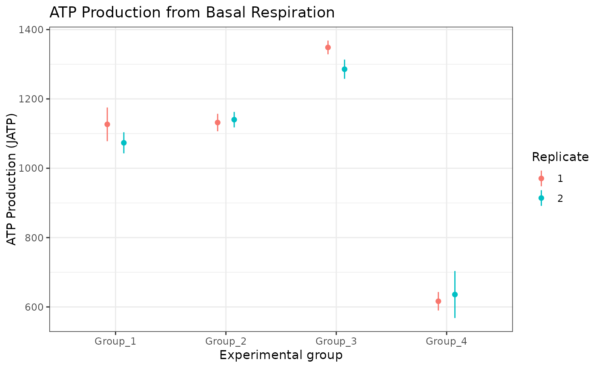

Generate the ATP Plot
Usage
atp_plot(
energetics,
model = "ols",
error_bar = "ci",
conf_int = 0.95,
size = 2,
shape = 16,
basal_vs_max = "basal",
glyc_vs_resp = "glyc",
group_label = "Experimental group",
sep_reps = FALSE,
ci_method = "Wald"
)Arguments
- energetics
A table of calculated glycolysis and OXPHOS rates. Returned by
get_energetics- model
The linear model used to estimate mean and confidence intervals: ordinary least squares (
"ols") or mixed-effects ("mixed")- error_bar
Whether to plot error bars as standard deviation (
"sd") or confidence intervals ("ci")- conf_int
The confidence interval percentage. Should be between 0 and 1
- size
Size of the points
- shape
Shape of the points
- basal_vs_max
Whether to plot
"basal"or"max"respiration- glyc_vs_resp
Whether to plot glycolysis (
"glyc") or respiration ("resp")- group_label
Label for the experimental group to populate the legend title
- sep_reps
Whether to calculate summary statistics on the groups with replicates combined. The current default
FALSEcombines replicates, but future releases will default toTRUEproviding replicate-specific summaries.- ci_method
The method used to compute confidence intervals for the mixed-effects model:
"Wald","profile", or"boot"passed tolme4::confint.merMod().
Details
Note: When we use the term 'max' in the package documentation we mean the maximal experimental OCR and ECAR values rather than absolute biological maximums.
Examples
rep_list <- system.file("extdata", package = "ceas") |>
list.files(pattern = "*.xlsx", full.names = TRUE)
seahorse_rates <- read_data(rep_list, sheet = 2)
partitioned_data <- partition_data(seahorse_rates)
energetics <- get_energetics(
partitioned_data,
ph = 7.4,
pka = 6.093,
buffer = 0.1
)
atp_plot(energetics, sep_reps = FALSE)
 atp_plot(energetics, basal_vs_max = "max", sep_reps = FALSE)

atp_plot(
energetics,
basal_vs_max = "basal",
glyc_vs_resp = "resp",
sep_reps = TRUE
)

# to change fill, the geom_point shape number should be between 15 and 25
atp_plot(
energetics,
sep_reps = FALSE
) +
ggplot2::scale_fill_manual(
values = c("#e36500", "#b52356", "#3cb62d", "#328fe1")
)
atp_plot(energetics, basal_vs_max = "max", sep_reps = FALSE)

atp_plot(
energetics,
basal_vs_max = "basal",
glyc_vs_resp = "resp",
sep_reps = TRUE
)

# to change fill, the geom_point shape number should be between 15 and 25
atp_plot(
energetics,
sep_reps = FALSE
) +
ggplot2::scale_fill_manual(
values = c("#e36500", "#b52356", "#3cb62d", "#328fe1")
)
 # to change color, use ggplot2::scale_color_manual
atp_plot(energetics, sep_reps = FALSE) +
ggplot2::scale_color_manual(
values = c("#e36500", "#b52356", "#3cb62d", "#328fe1")
)
# to change color, use ggplot2::scale_color_manual
atp_plot(energetics, sep_reps = FALSE) +
ggplot2::scale_color_manual(
values = c("#e36500", "#b52356", "#3cb62d", "#328fe1")
)